INSTALLING STM32 USB BOOTLOADER USING USB/SERIAL ADAPTER
By: Gene Kennedy
What you will need:
A PC running windows (I'm using Widows 10). If you are using a Widows operating system these instructions won't work, sorry.
Compatable STM32 board (I'm using a generic "Blue Pill" board). There are many to choose from. This the board I am using and it's pinout:
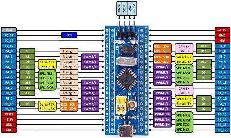
Note the two yellow jumper headers next to the REST pushbutton and just above and left of the USB connector. The right hand jumper will remain in the position, the left jumper will be moved back and forth as we proceed.
Jumper wires to connect the STM32 to the USB/serial adapter (4 jumpers are required).
USB to serial adaptor that can generate 3.3VDC serial signals (I'm using a FT232 adaper). There are many to choose from.
USB cable to connect the adapter to PC.
USB cable to connect the STM32 to the PC.
Access to the internet to download files as needed.
Let's get started:
Download and install latest stable release of Arduino IDE (I'm using version 1.8.3). Others will work but not all.
Download lastest release of Arduino_STM32-R20170323. Note R20170323 denotes, R= release, 20170323=date(YYYYMMDD).
Unzip this folder to the Documents/Arduino/hardware directory. Create the hardware folder if it does not exist.
Connect a USB to serial adapter (not USB to RS232, must be a 3.3V output from the USB to serial converter or you will destroy the STM32 board).
Plug the USB connector into your PC without any connection to the STM32. If it does not recognize the USB device, download, unzip and install CH341SER.zip driver.
Disconnect the USB/serial adapter from the PC. Connect the USB/serial adapter and the STM32 using jumper wires as below. Note your USB/serial adapter and STM32 may be marked slightly different.
USB/serial STM32
VC <--> 3.3V or 5V (Verify A9/A10 are 5V tolerant)
GND <--> GND
RX <--> PA9 (A9)
TX <--> PA10 (A10)
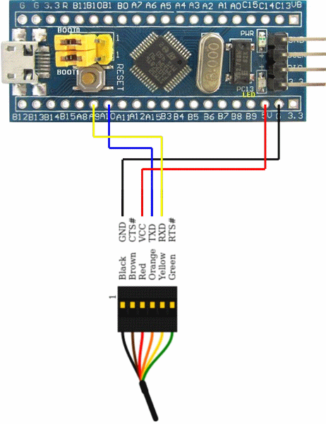
Check your wiring and make sure you got it correct. If your wiring is incorrect you may damage the adapter or the STM32.
Move the Boot0 jumper (as shown in the above image [top jumper]) from the 0 selection to the 1 selection (jumper to the left).
Connect the USB/serial adapter to the PC using the USB cable. Verify through Device Manager that the USB port was detect (it will show up in the COM & LPT section).
The Power LED should be on (some boards may not have a power LED).
Download, unzip and install STMicroelectronic's Demonstrator GUI (the file I am using is named "en.stws-stm32102.zip", current release).
Download and unzip the STM32duino-bootloader-master.zip file. Remember where you saved these files as we will need to access a file from this directory.
Determine which STM32 pin your board uses (the Blue Pill uses PC13 for the on board LED)
Run the Demonstrator GUI software.
You will see this screen:
`
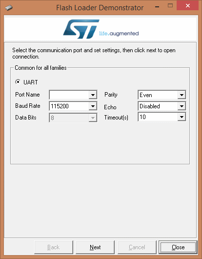
In the "Port Name" drop down box select the COM port for USB/Serial adapter. If it isn't in the list Windows did not recognize it and you can not proceed.
In my case it turns out to be COM5, yours may and most likely will be something different.
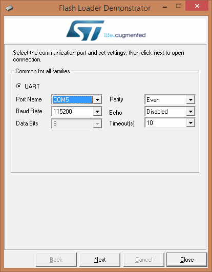
Click the "Next" button. If the USB/Serial device and the STM32 are recognized the following screen will appear:
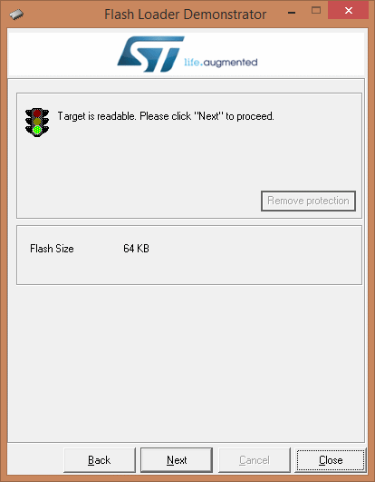
Click the "Next" button. The following screen will appear (note your board may regenerate diffent info but that's OK):
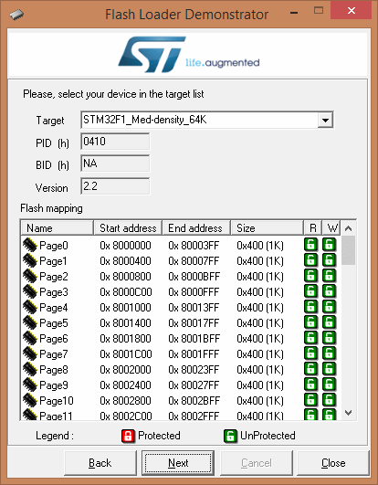
Click the "Next" button. The following screen will appear:
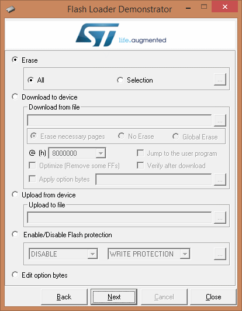
Click the "Download to device" radio button and the screen will appear:
Now Click the browse button (the button to the right of the "Download from file" text box, it is labeled browse but that's what it is).
The Open File dialog will appear as follows:
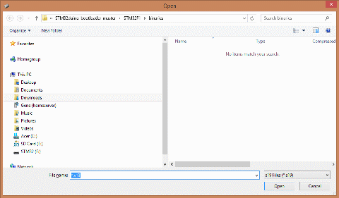
Over in the lower right hand corner there is a drop down box that allows only the selected file type to be displayed, select ".Bin".
Navigate to directory that you unzipped to STM32duino-bootloader-master.zip file.
From this directory navagate to the /STM32F1/binaries/ and select the bootloader that corresponds to your board.
Since my Blue Pill board uses PC13 to control the onboard LED I need to select the file "generic_boot20_pc13.bin".
Say you board uses PA9 for the onboard you would select the file "generic_boot20_pa9.bin", as an example.
Here my dialog box after selecting the file.
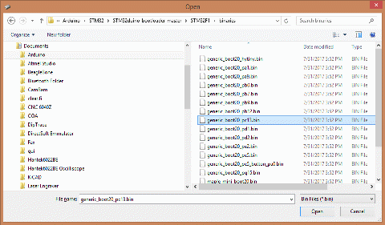
Click the open button.
The resulting screen, only your file name may be different appears as follows:
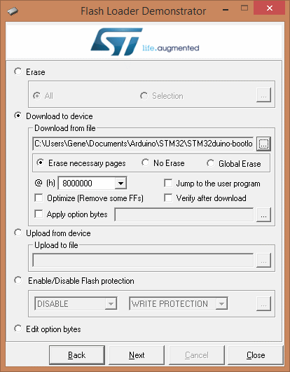
Click Next.
If everything goes well you should see the following screen:
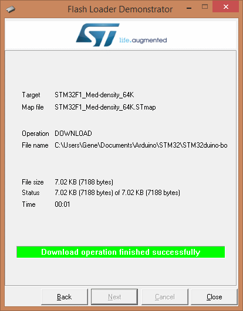
The Arduino USB bootloader is now installed on your board.
Notice the onboard is not on or blinking, just the power LED is on.
Move the Boot zero jumper back to it's orginal 0 position.
Now reset the board using the reset button.
Immediately after reset the onboard LED will blink fast and then steadily blink slower.
This indicates that the bootloader is loaded and there is no application program to execute.
The USB bootloader does not have support for the boards USB port, they wanted to keep it's code as small as posssible.
In order to get the support for the USB we will load an empty arduino sketch.
Startup the Arduino IDE (there should be an Arduino shortcut on your desktop, click it.
Once it is up and running (takes several seconds on my PC) you should see something similar to this:
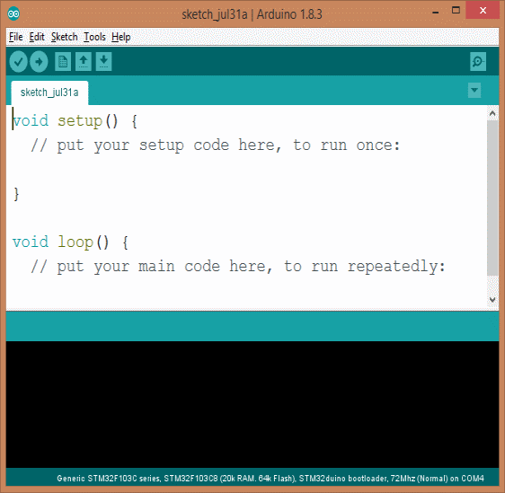
Under the Tools drop down menu set the following:
Board: Select the board you are using from the list (I'm using a STM32 Blue Pill so I select "Generic STM32F103C series"). Set this to match the board you are using.
Note the the Variant and CPU Speed fields are automaticlly change to match the board you selected. Verify they are correct.
Upload Method: Select "Serial".
Port: Set this to the COM port for the USB/Serial adapter (should be the same COM address as we used to load the USB bootloader).
The final result should look similar to this:
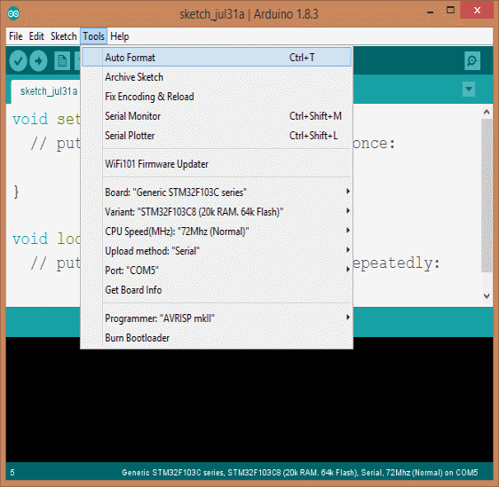
Move the Boot0 jumper back to the 1 position.
Press the reset button on the board and notice the onboard LED is no longer blinking.
Take note of the compilation progress bar while it compiles. Note:
The progress bar will show some progress and then clear.
Then the progress bar will show some progress until the compilation is complete.
The the second progress bar 1st shows progress is when you need to reset the board when uploading the sketch.
Don't worry if you don't get it the 1st time, no harm no foul.
In the "Sketch" drop down menu select "Verify/Compile" as shown below:
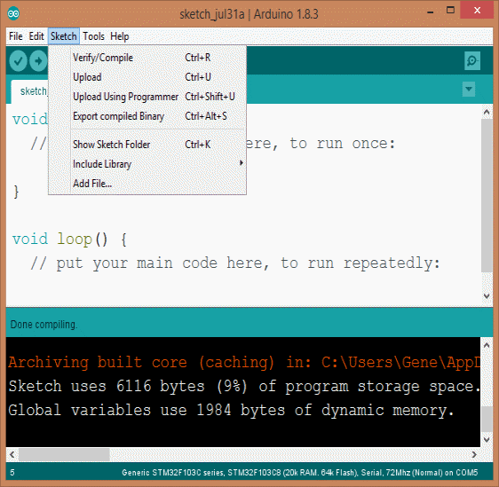
When compilation is complete you should see a screen similar to this:
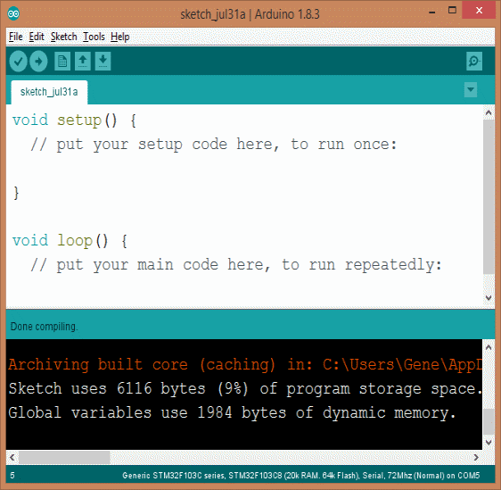
The reason we compile the project before we upload the sketch is beause the 1st compilation is very slow.
When we download the sketch we will need to time the reset of the board with the upload process.
Having a fairly consistant compilation time will make it easier to time the reset.
Once we have the USB bootloader up and running we will no longer need to time this reset, it happens automatically.
Now we are ready to upload the sketch.
Be prepared to reset the board as explained above.
Go to the "Sketch" drop down menu and select "Upload", simular to this:
Reset the bar when the 2nd compilation progess begins to show progress, don't hold the button down, press and release.
If the upload is sucessful you should see a screen similar to this:
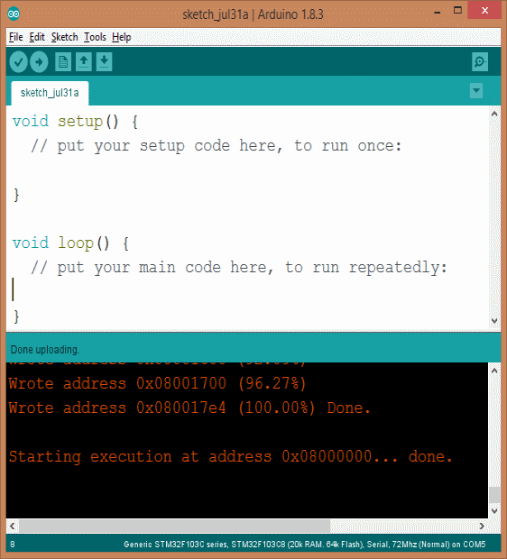
Congrats, you now h ave your board ready to use as is USB port to upload sketches!
If you get a screen similar to this, the upload was not successful:
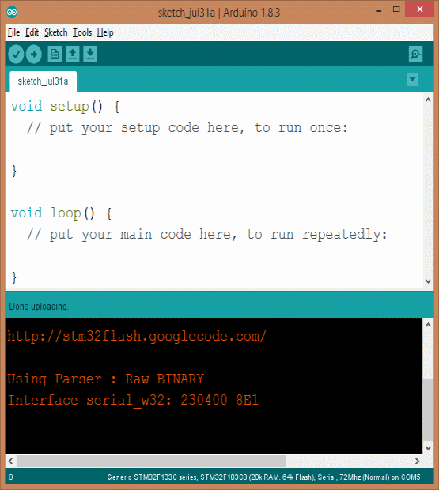
If at first you don't succeed, try again. It make take a few tries to get the timing right.
Some boards/PCs operate faster than others. This timing seems to for my setup.
Try diffent timing to determine what works best for your setup.
I have had the USB/serial adapter stop functioning on occasion. Unplug it a plug it backin, try again.
Press the reset button.
Notice the onboard LED no longer blinks fast and then continues to blink slower.
This due to a sketch being upload to program memory.
Now move the Boot0 jumper back to the 0 position, reset the board.
The board is now ready for sketches to be uploaded to the board via the onboard USB port!
Don't get to excited we are not done yet.
Now we must set up Widows to recognize the USB port.
Open up Windows Explore and navigate to the location that you unzipped the Arduino_STM32-R20170323.zip file.
Now navagate to /drivers/win/ and you will find a "install_drivers.bat" file.
Double click this file to execute it, should look something similar to this:
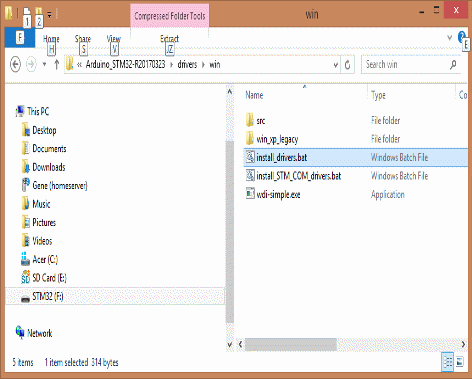
Follow instructions until the batch file completes.
If you notice in the above screen shot there is also another "install_STM_COM_drivers.bat" file.
Instructions aren't clear but I also ran "install_STM_COM_drivers.bat" by double clicking it as well (just guessing).
Plug your board into a USB cable connected to your PC.
In the Arduino IDE select "Tools" in the drop down menu select "Upload Method:" and set it to "STM32duino bootloader".
Should appear similar to this:
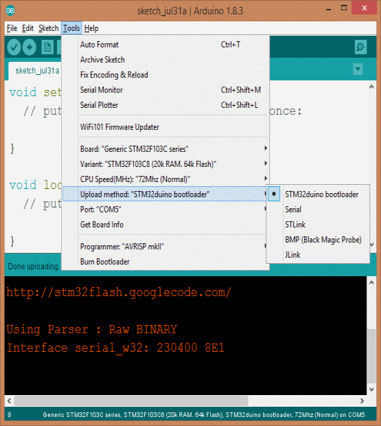
Go to "Tools" drop down menu and select "Port", you should now see the Arduino USB port in the COM selection.
If Windows recognizes the Arduino USB port you are now ready to use it.
Unfortunately I can't provide a screens shot because Windows does not recognize my boards USB.
The Blue Pill boards are known to have the wrong resistor install on R10 (bottom of board).
I removed this resistor and installed a through hole 1.5K resister between the 3.3V and the A12 pin.
Sorry but still no cigar.
I've tried this with 4 seperate Blue Pill boards and have not gotten it to work.
Anyone know why this doesn't work?
Thanks in advance!
I would like to correct these instructions and then post to the forum.